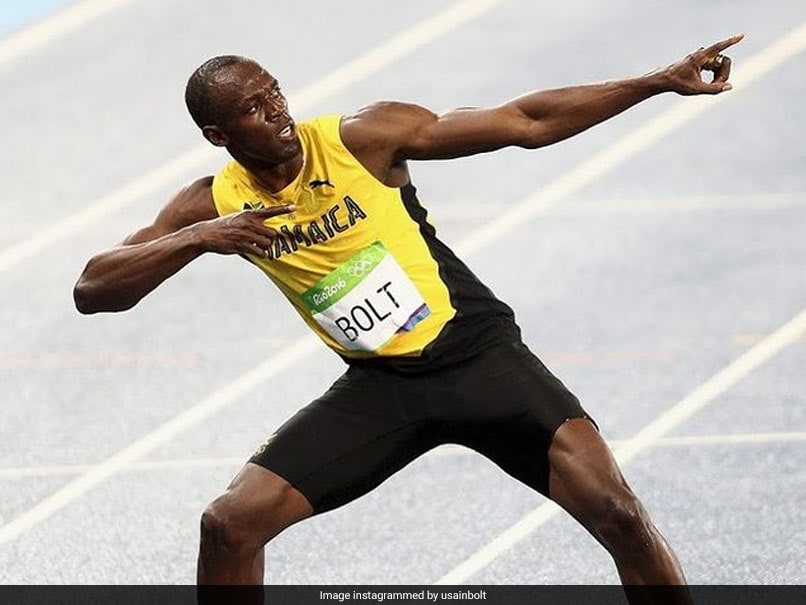

USAIN BOLT

An eight-time Olympic gold medallist, Bolt is the only sprinter to win Olympic 100 m and 200 m titles at three consecutive Olympics (2008, 2012 and 2016).
- His achievements as a sprinter have earned him the media nickname "Lightning Bolt"
- Bolt was born on 21 August 1986 to parents Wellesley and Jennifer Bolt[10] in Sherwood Content,[16] a small town in Jamaica.
- Bolt claimed 19 Guinness World Records, and, after Michael Phelps, holds the second highest number of accumulative Guinness World Records for total number of accomplishments and victories in sports.